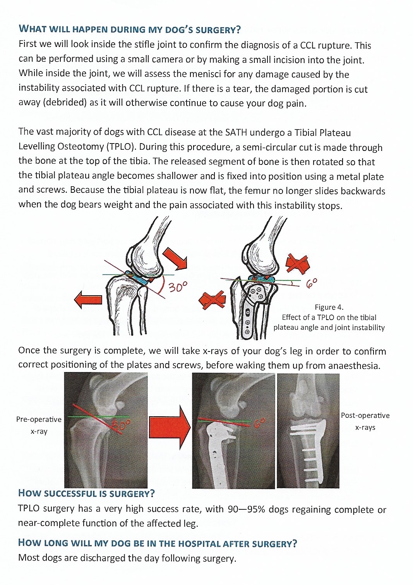
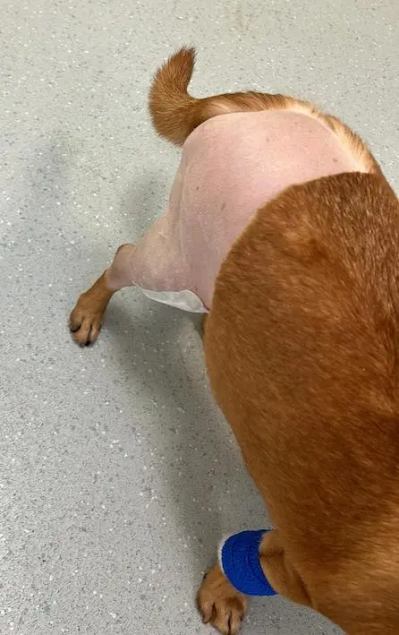
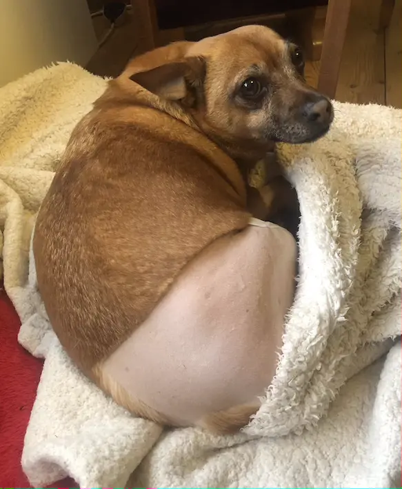
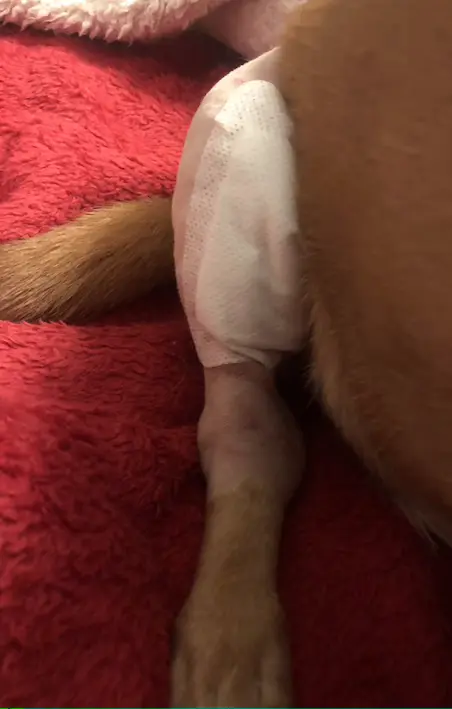
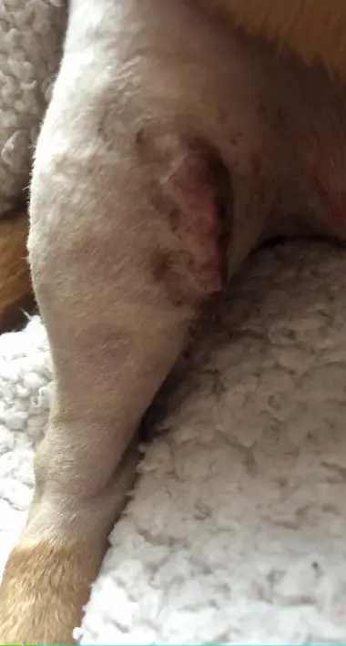
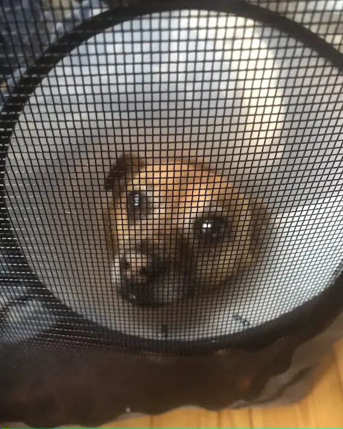

King of Pain
The day of Jak’s surgery dawned. After fasting from the previous evening, he headed off with a rumbly tum to Liverpool University's Small Animal Teaching Hospital (opens in a new tab) with his human Dad. He was quaking with fear as they arrived (Jak, that is), but Dad had to steel himself to leave our pet to receive his treatment for a torn cruciate ligament.
Reading the leaflet about what took place, it sounds brutal.
Apparently the vets were mindful of Jak being big-boned (ho-hum) and needed to use a sturdier metal plate as part of the surgery.
Updates eventually filtered through. The surgery had been a success and Jak was recovering. Even so, it was an anxious wait until the following day when we could collect him and bring him home.
He was delighted to leave, walking, wearing his ‘cone of shame’ and showing off a shaved rear end.
Dad had been pleased to hear that Jak had a 8 out of 9 condition rating until the vets indicated that 9 was allocated to the most obese dogs! A score of 8 wasn't much better. A stricter diet would now be in force, made even more important given Jak would have an 8-week long rehabilitation period with limited exercise.
We hadn’t realised his fur was so thick: a lovely soft white layer, topped by Jak’s trademark tan bristles. Lovely shaving work. Everyone was keen to stroke the smooth skin and remark on the revealed freckles!
The surgery wounds were concealed by a large dressing, hence the cone to stop little teeth worrying at it.
Jak took it all in his stride (no pun intended). After having cheese and cream rejected as carriers for his paracetamol tablets, we resorted to peanut butter. It's scoffed no matter what is in it. He was more reluctant to take the liquid anti-inflammatory that we had to inject into his mouth, but most of it went down.
However, after being happy to cock his leg in the garden for years, in his post-operative state, Jak declared it unacceptable as a toilet. He seemed prepared to hold it all in to try to blackmail us into taking him out. And we couldn’t…2 weeks limited access to the garden was the rule. It was a battle but eventually we came to an accommodation.
Just one panic. A few days after his surgery, when resting, he moved, yelped and then couldn’t put his foot on the floor. He was shaking and panting. We were in a flap. Calls to the vet suggested we take him back to the hospital for a check. Late Saturday night. A long journey, but one we were prepared to make.
It was thought he might just have had a twinge in his soft tissue. More pain relief might sort the problem, but we accepted the offer of Jak staying in hospital overnight to be assessed further.
More worry until the call on Sunday morning to say Jak had had a good night and was back on his feet. His wound was healing so well that he no longer needed the dressing. Definitely needed the cone from then on!
He’s been steadily improving since.
Kuma has tried out the new Pawhut pet trailer that we hope will let Jak experience the outside world and prevent boredom, without him having to walk far or require us to indulge in some significant weight lifting efforts.